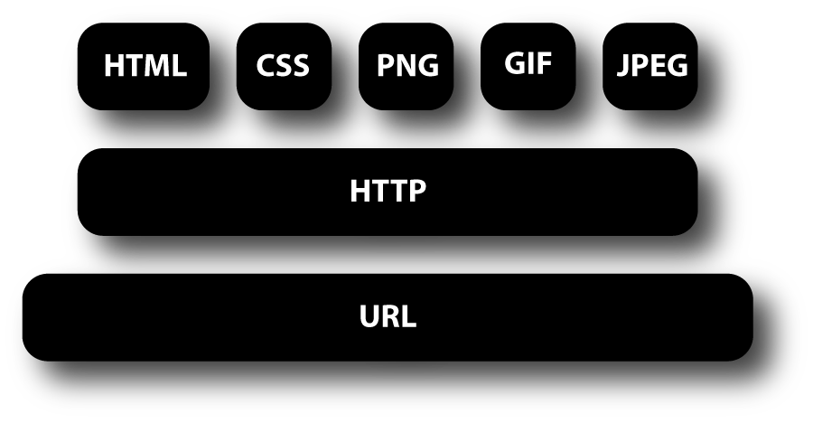

There are many reasons why you might want to add an image to a web page:
you might want to include a logo, photograph,
illustration, diagram, or chart. There are several things to consider when selecting and
preparing images for your
site, but taking time to get them right will make it look more attractive and professional. In this chapter you will
learn how to:
These pages demonstrate exactly how your browser handles the ALIGN attribute in an IMG tag.
LEFT This aligns the image to the left (allowing text to flow around its right-hand side).
RIGHT This aligns the image to the right (allowing text to flow around its left-hand side).
 There are around 10,000 living species of
There are around 10,000 living species ofthrough the same APIs used by VS Code. This topic explains how to find, install, and manage VS Code extensions.
